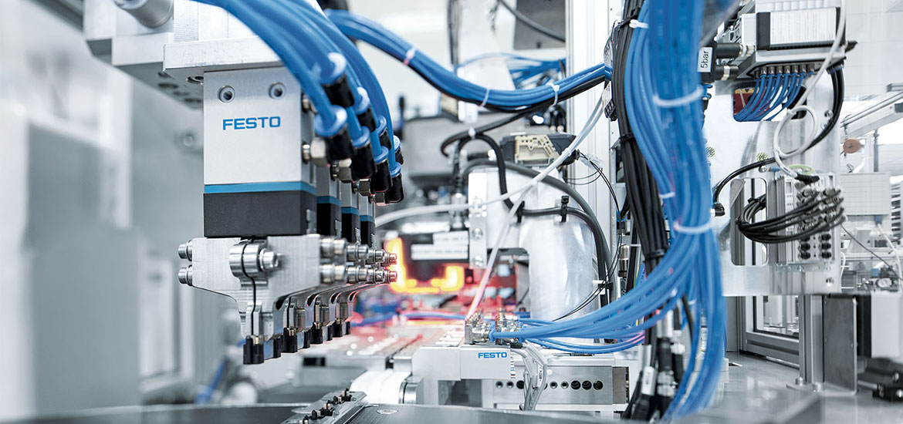

Tipos de estabilizadores
-
Estabilizadores hidráulicos
Estabilizadores que utilizan fluido hidráulico para mantener la estabilidad Estabilizador hidráulico de carga aplicable a todos los telescópicos, cargadores frontales y carretillas elevadoras.
- Capacidad 2000 kg
- Enganche FEM/EURO
- Horquillas y placas FEM
El estabilizador hidráulico permite bloquear y estabilizar la carga, para ejecutar procedimientos de manipulación de manera segura, mejorando la velocidad y la eficiencia de las actividades
-
Estabilizadores neumáticos
Estabilizadores que utilizan aire comprimido para mantener la estabilidad.Los estabilizadores neumáticos son dispositivos que utilizan aire comprimido para mantener la estabilidad y el equilibrio en vehículos, máquinas y estructuras. Estos estabilizadores funcionan mediante la utilización de un sistema de aire comprimido que se expande y se contrae para compensar los movimientos y las vibraciones, lo que ayuda a mantener la estabilidad y el equilibrio.
Los estabilizadores neumáticos se utilizan en una variedad de aplicaciones, incluyendo:
- Vehículos: Los estabilizadores neumáticos se utilizan en vehículos para mejorar la estabilidad y el manejo, especialmente en condiciones de conducción difíciles, como en carreteras sinuosas o en terrenos irregulares.
- Máquinas pesadas: Los estabilizadores neumáticos se utilizan en máquinas pesadas, como grúas, excavadoras y bulldozers, para mantener la estabilidad y el equilibrio durante las operaciones.
- Estructuras: Los estabilizadores neumáticos se utilizan en estructuras, como puentes y edificios, para mantener la estabilidad y el equilibrio en condiciones de viento o terremotos.
- Aeronáutica: Los estabilizadores neumáticos se utilizan en la aeronáutica para mantener la estabilidad y el equilibrio de los aviones durante el vuelo.
Los estabilizadores neumáticos ofrecen varias ventajas, incluyendo:
- Mejora la estabilidad: Los estabilizadores neumáticos ayudan a mantener la estabilidad y el equilibrio en condiciones de movimiento o vibración.
- Reducción del riesgo de accidentes: Los estabilizadores neumáticos pueden reducir el riesgo de accidentes al mantener la estabilidad y el equilibrio
- Mejora la eficiencia: Los estabilizadores neumáticos pueden mejorar la eficiencia en el trabajo al reducir la fatiga y el estrés en los operadores.
- Fácil mantenimiento: Los estabilizadores neumáticos son fáciles de mantener y reparar.
Los estabilizadores neumáticos pueden ser clasificados en diferentes tipos, incluyendo:
- Estabilizadores neumáticos de tipo pistón: Estos estabilizadores utilizan un pistón que se mueve dentro de un cilindro para comprimir y expandir el aire.
- Estabilizadores neumáticos de tipo membrana: Estos estabilizadores utilizan una membrana flexible que se expande y se contrae para comprimir y expandir el aire.
- Estabilizadores neumáticos de tipo resorte: Estos estabilizadores utilizan un resorte que se comprime y se expande para mantener la estabilidad.
-
Estabilizadores electromecánicos
- Motores eléctricos: Utilizan motores eléctricos para generar la fuerza necesaria para estabilizar el sistema
- Sistemas mecánicos: Incorporan sistemas mecánicos, como engranajes, ejes y brazos, para transmitir la fuerza generada por el motor a la estructura que se desea estabilizar
- Control electrónico: Utilizan sistemas de control electrónico para regular la velocidad y la dirección del motor, y ajustar la fuerza de estabilización según sea necesario.
Estabilizadores que utilizan motores eléctricos para mantener la estabilidad.Los estabilizadores electromecánicos son dispositivos que utilizan motores eléctricos y sistemas mecánicos para mantener la estabilidad y el equilibrio en vehículos, máquinas y estructuras. A continuación, te presento un resumen de los estabilizadores electromecánicos:
Beneficios de los estabilizadores
-
Mayor estabilidad en cualquier terreno
-
Reducción del riesgo de accidentes
-
Mejora la eficiencia en el trabajo
Aplicaciones de los estabilizadores
-
Construcción
Estabilizadores para grúas, excavadoras y otros equipos de construcción
-
Agricultura
Estabilizadores para tractores y otros equipos agrícolas
-
Industria
Estabilizadores para máquinas y equipos industriales